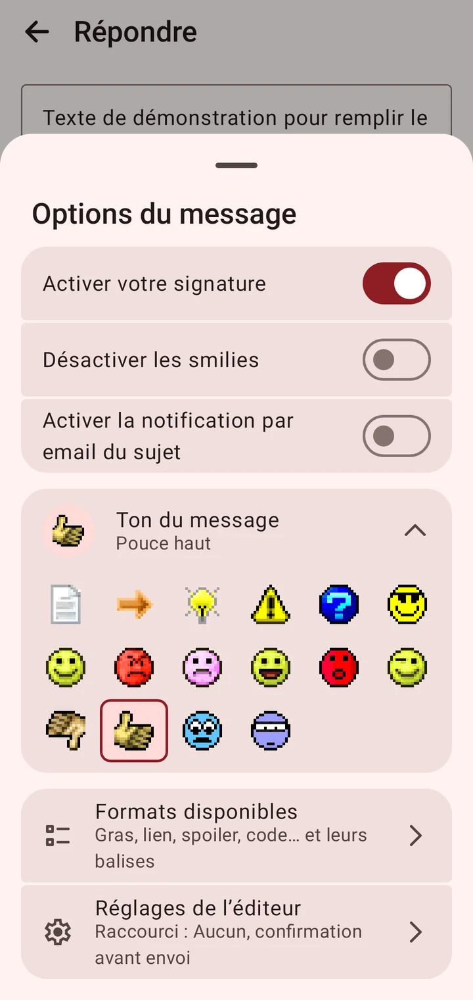

Feuille Options de l’éditeur
Trois directions de refonte proposées par Fable, rendues par le vrai code Compose (Roborazzi) à 360 × 760 dp, sprites HFR réels. Même contenu partout : bascules, ton du message (post et sujet), « Formats disponibles » (nouveau) et « Réglages de l’éditeur », qui nomme désormais le raccourci de la barre.
A · Liste sobre, deux pages
Bascules avec icône, grille du ton visible, deux lignes de navigation. Formats = seconde page de la même feuille. Une seule surface : un seul Retour, un seul retour du focus. La plus haute.
Recommandée par Fable
B · Cartes groupées, ton replié
Trois cartes ; le ton tient en une ligne et se déplie. La plus courte et la plus travaillée, mais cache la grille et empile deux feuilles pour les formats.
C · Deux onglets, pied fixe
« Options | Formats » en tête, « Réglages de l’éditeur » épinglé en bas. Formats à un tap ; corps étroit en paysage et en MP.
Habillage et structure sont séparables : on peut poser les cartes de B sur la structure de A, ou replier le ton de B dans A. Prototype : branche locale proto/1417-options-sheet, 13/11/2026.
Réponse à un sujet, thème clair
Ton « Pouce haut » choisi. La feuille actuelle s’ouvre à mi-hauteur et coupe la suite ; les trois variantes s’ouvrent à la hauteur de leur contenu (un seul cran, Retour ferme en un geste).


Réponse à un sujet, thème sombre


AMOLED


Nouveau MP (pas de ton)
Clair puis sombre.


Formats disponibles
Nouveau (point 5 de ta liste). A : seconde page de la même feuille, flèche « Retour aux options ». B : seconde feuille en cartes. C : onglet « Formats ». Un tap applique le format à la sélection et rend la main au champ.


B : ton déplié
Dans B, le ton est replié en une ligne (sprite et nom) ; un tap déplie la grille sur place.


Police 1,3


Paysage, sombre
La feuille garde la largeur maximale Material (640 dp, centrée) et son contenu défile.